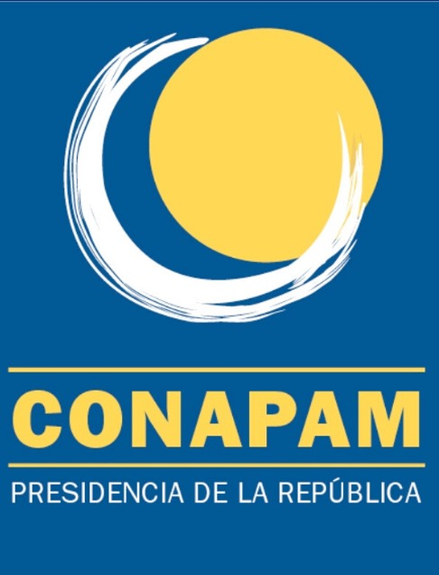

Sobre CONAPAM
CONAPAM es una institución pública del Estado Costarricense, encargada del envejecimiento y vejez, adscrita a la Presidencia de la República y con personalidad jurídica.
Su objetivo es promover el mejoramiento en la calidad de vida de las personas adultas mayores a través de políticas públicas integrales que creen condiciones y oportunidades para una vida plena y digna.
Fines
- Propiciar y apoyar la participación de la comunidad, la familia y la persona adulta mayor en las acciones para su desarrollo.
- Impulsar la atención de las personas adultas mayores por parte de las entidades públicas y privadas y velar por el funcionamiento adecuado de los programas y servicios destinados a ellas.
- Velar porque los fondos y sistemas de pensiones y jubilaciones mantengan su poder adquisitivo, para que cubran las necesidades básicas de sus beneficiarios.
- Proteger y fomentar los derechos de las personas adultas mayores referidos en el ordenamiento jurídico en general.
Funciones
- Formular las políticas y los planes nacionales en materia de envejecimiento..
- Acceder a las evaluaciones anuales de programas y servicios para adultos mayores ejecutados por instituciones públicas o privadas.
- La ley permite investigar y denunciar irregularidades en organizaciones que atienden a adultos mayores, y recomendar sanciones según lo estipulado.
- Fomentar la creación, continuidad y accesibilidad de los programas y servicios relativos a la atención integral de las personas adultas mayores y velar por ellos.
- Elaborar los reglamentos internos para cumplir adecuadamente los objetivos de este Consejo.
Para información visite https://conapam.go.cr/